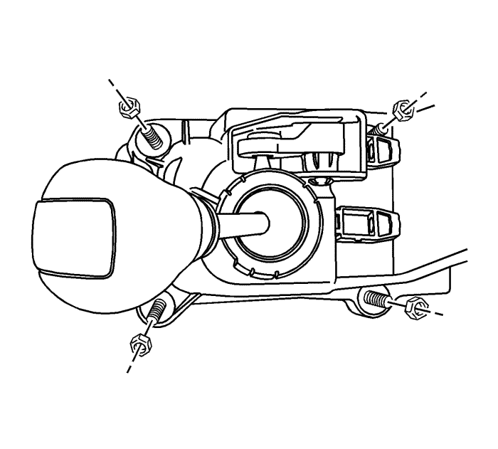
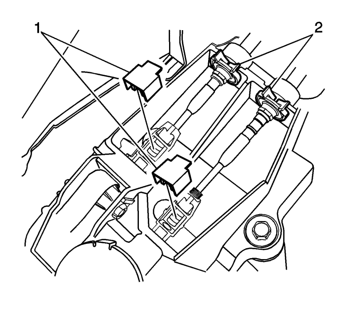
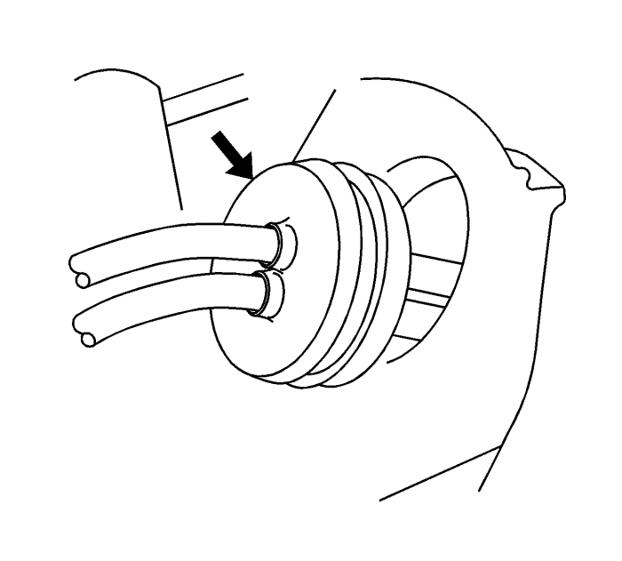
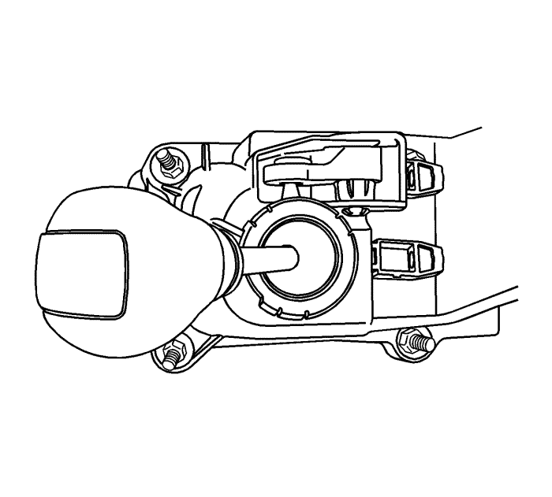
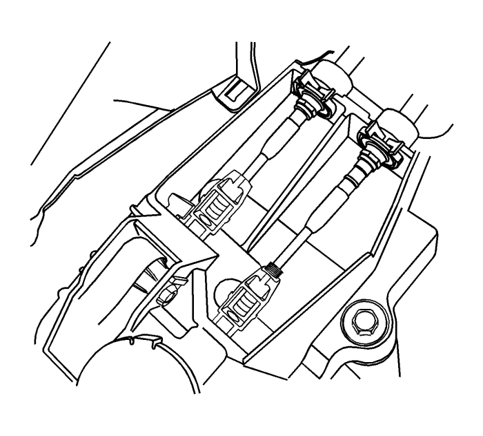
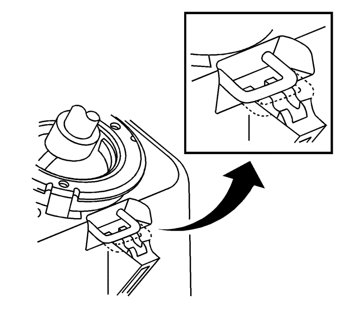
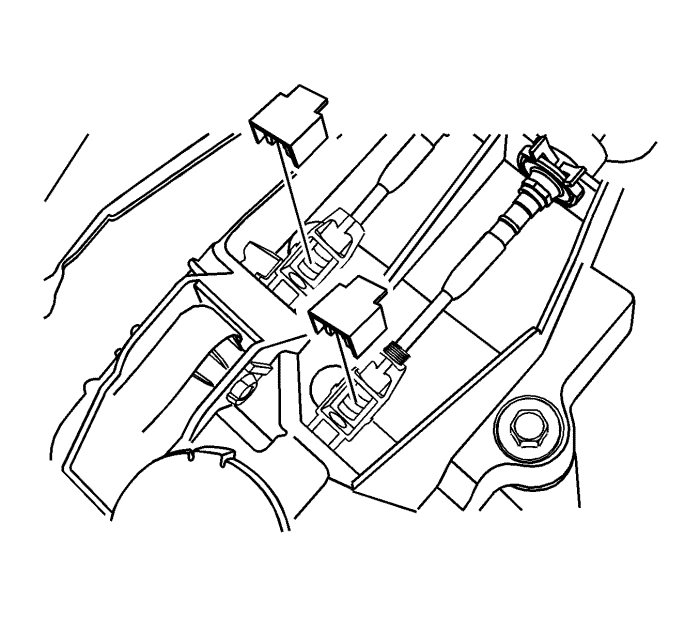

Sustitución de la palanca de cambios
Procedimiento de desmontaje
Advertencia: Consulte Advertencia sobre la desconexión de la batería en la sección Prólogo.

- Desconecte el cable de batería negativo.
- Extraiga la consola. Consultar Sustitución de la consola inferior frontal : Carrocería corta → Carrocería larga .
- Desconecte los cables de control del cambio de marchas de la carcasa de la palanca de cambio.
- Desmonte las tuercas de la carcasa de la palanca de cambios.
- Desmonte el alojamiento de la palanca de cambios.

- Desmonte los bloqueos de ajuste (1) del cable de mando del cambio.
- Extraiga los cables de control del cambio de marchas (2) del soporte de la carcasa de la palanca de cambio.
- Desconecte los cables de control del cambio de marchas de los ajustadores del control de cambio.

- Retire los cables de la palanca de cambios (1) del eje de transmisión con una herramienta adecuada.
- Retire los cables (2) del soporte de cables de mando del cambio de marchas.

- Desmonte el pasacables del salpicadero.
- Desmonte los cables de control del cambio de marchas del vehículo.
Procedimiento de montaje

- Monte la carcasa de la palanca de cambios.
Precaución: Consulte Precaución con las fijaciones en la sección Prólogo
- Monte las tuercas en la carcasa de la palanca de cambios y apriete a 8 N·m (71 lb in).
- Conecte los cables del cambio en el alojamiento de la palanca de cambios y ajústelos.
- Monte los cables de control del cambio de marchas en el vehículo.
Nota: Asegúrese de que el pasacables del cable de mando del cambio esté bien asentado y de que su flecha apunte hacia arriba.
- Monte el pasacables del panel del salpicadero.
- Coloque los cables (2) en el soporte de cables de mando del cambio de marchas.
- Monte los cables de control del cambio de marchas (1) en el eje de transmisión.
- Sitúe el eje de transmisión en punto muerto.

- Monte los cables de control del cambio de marchas en el soporte de la carcasa de la palanca de cambio.

- Ponga la palanca de cambios en punto muerto.
- Con los extremos de los cables de mando en los ajustadores, ajuste los cables presionando el pasador de bloqueo del punto muerto. Mueva el selector ligeramente para centrar el pasador de bloqueo de punto muerto.

- Presione y enclave los bloqueos de ajuste de los cables de mando del cambio.
- Tire del pasador de bloqueo del punto muerto hasta su posición original.
- Monte la consola. Consultar Sustitución de la consola inferior frontal : Carrocería corta → Carrocería larga .
- Conectar el cable de batería negativo.
| © Copyright Chevrolet Europe. All rights reserved |